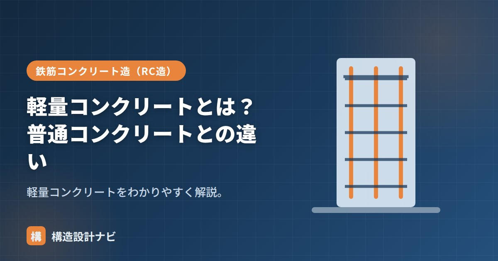

軽量コンクリートとは？普通コンクリートとの違い

軽量コンクリートとは、軽量骨材などを使って自重を軽くしたコンクリートです。同じ体積の普通コンクリートに比べて重量が2〜4割ほど軽く、建物を軽くしたい床や屋根で使われます。骨材が軽くなる分、コンクリート自体の性質（強度発現・変形性状・断熱性）も普通コンクリートとは異なるため、構造設計・施工の両面で普通コンクリートとの違いを理解しておく必要があります。
- 軽量コンクリートは軽量骨材を用い、単位容積質量を約1.4〜2.1t/m³まで軽減したコンクリート。
- 普通コンクリートよりヤング係数が小さく乾燥収縮が大きい一方、断熱性は高い。
- 建物の自重を減らせるため、地震力の低減にもつながる。
特徴
- 軽量骨材（膨張頁岩などを焼成した人工骨材）を使う。
- 単位容積質量は約1.4〜2.1 t/m³と、普通コンクリートより軽い。
- 粗骨材のみ軽量の「1種」、粗・細骨材とも軽量の「2種」がある。
- 断熱性が比較的高い。
1種・2種の違い
軽量コンクリートは、軽量骨材を使う範囲によって1種と2種に分けられます。1種は粗骨材（砂利にあたる大きい粒）だけを軽量骨材に置き換えたもので、細骨材（砂にあたる小さい粒）は普通の骨材を使うため、2種に比べて重量・強度のバランスが取りやすいのが特徴です。2種は粗骨材・細骨材ともに軽量骨材を使うため、より軽くなる一方、ヤング係数の低下や乾燥収縮の増加も大きくなります。用途に応じてどちらを使うか使い分けます。
普通コンクリートとの違い
下の表は、単位容積質量・ヤング係数・乾燥収縮・コストの観点で普通コンクリートと軽量コンクリートを比較したものです。数値はあくまで代表的な目安で、配合や骨材の種類によって変わります。
| 普通コンクリート | 軽量コンクリート | |
|---|---|---|
| 単位容積質量 | 約2.3 t/m³ | 約1.4〜2.1 t/m³ |
| 自重 | 重い | 軽い |
| ヤング係数 | 大きい | 小さい（変形しやすい） |
| 乾燥収縮 | 普通 | 大きめ |
| コスト | 安い | 高め |
地震力への影響
建物にかかる地震力は、建物の重量にほぼ比例します。軽量コンクリートで床や屋根の重量を減らせば、その分だけ地震時に柱・梁・基礎に伝わる力（地震力）も小さくできます。特に高層建物では、上層階の重量を軽くすることで下層階の柱・耐震壁の負担を抑えられるため、構造計画上のメリットとして意識されます。
使用箇所
- 床スラブ：自重を減らして梁・柱・基礎の負担を軽くする。
- 屋根・庇：軽量化したい部位。
- 改修・増築：既存躯体への荷重を抑えたいとき。
軽量化で地震力（重量に比例）を減らせる利点がありますが、ヤング係数が小さく乾燥収縮が大きいため、たわみ・ひび割れに配慮が必要です。コストも普通コンクリートより高くなる傾向があるため、軽量化のメリットと費用を比較して採否を判断します。
軽量コンクリートを採用する提案が来ると、まず梁のたわみをヤング係数の低下分を反映して再確認します。自重が減るメリットにばかり目が行き、たわみ検討を普通コンクリートの数値のまま流用してしまう見落としを何度か目にしてきました。
材料となる「軽量骨材」、標準の「普通コンクリート」、種類の全体像は「コンクリートの種類7選」、性質は「コンクリートの弱点」をどうぞ。
1種と2種の違い（図解）
設計・施工上の注意点
| 項目 | 普通コンクリートとの違い | 対応 |
|---|---|---|
| ヤング係数 | 6〜7割程度と小さい | 同じ断面でもたわみが大きくなる。断面設計で考慮 |
| 乾燥収縮 | 大きい | ひび割れ対策（配筋・目地）を強化 |
| ポンプ圧送 | 骨材が吸水し閉塞しやすい | 事前吸水（プレウェッティング）が必須 |
| 強度の上限 | 骨材強度が支配し高強度化が困難 | Fc36程度までが実用範囲 |
| コスト | 普通コンクリートより高い | 軽量化のメリットと比較して判断 |
軽量コンクリートが最も効果を発揮するのは、自重が支配的な部材です。大スパンのスラブや屋根では、自重の削減がそのまま部材断面の縮小につながります。また建物全体を軽くすれば地震力が減り、基礎・杭の規模も縮小できます。一方、柱のように軸力が積載荷重主体の部材では、軽量化の効果は限定的です。部位を選んで使うのが合理的です。
実際の採用例
| 部位・用途 | 採用の理由 |
|---|---|
| 大スパンの床スラブ | 自重が支配的な部材のため、軽量化が断面縮小に直結する |
| 既存建物の増築・改修 | 既存の基礎・柱への負担を増やさずに床を増設できる |
| 屋上の押えコンクリート | 防水層の上に載せる部分。建物への荷重を抑えられる |
| 高層建築の上層階の床 | 上層を軽くすることで地震力と柱・基礎の負担を減らせる |
| プレキャスト部材 | 運搬・揚重が容易になり、施工性が向上する |
床を軽くすると、それを支える梁が小さくでき、梁が小さくなれば柱への荷重が減り、さらに基礎・杭の規模も縮小できます。加えて地震力は重量に比例するため、建物全体の耐震設計も有利になります。材料単価は普通コンクリートより高いものの、この連鎖的な効果を含めた総合的なコストで判断すると、採用が合理的になる場面があります。
まとめ
- 軽量コンクリートは軽量骨材で自重を軽くしたコンクリート（約1.4〜2.1t/m³）。
- 粗骨材のみ軽量の1種、粗・細骨材とも軽量の2種がある。
- 普通より軽く断熱的だが、ヤング係数が小さく乾燥収縮が大きい。
- 自重を減らせるため地震力の低減にもつながり、床・屋根・改修など軽量化したい部位に使う。